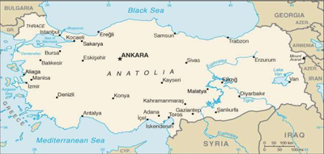

THIS PAGE ABOUT TURKEY
The glorious Turkey continues to fascinate visitors and locals alike with its vibrancy and great variety. May it be in arts & culture, eating & drinking, shopping or sports there is always something new in Turkey for everyone and every taste.
Click HERE for the flag
SOME FAMOUS CITIES
- ISTANBUL
Offical Web Page
- Historical, Modern, Jogging
- IZMIR
Offical Web Page
- Historical, Modern, Swimming, Jogging
- ANTALYA
Not an offical Web Page
- Historical, Modern, Swimming, Jogging
- ERZURUM
Ref from Tripadvisor
- Ski(Winter Sports), Jogging
YOU SHOULD DO/EAT THESE THINGS
- EAT SISH KEBAB, DONER KEBAB
- You can find them all cities in Turkey
- VISIT CAPPADOCIA, RIDE A HOT AIR BALLON
- You must go to Adiyaman (City)
- TRY FAMOUS TURKISH DELIGHT
- You can find it in Istanbul
MAP OF TURKEY(CLICK PHOTO TO ENLARGE)

HOW YOU CAN GO THERE?
| CITY |
AIRPORT |
FERRY |
| ISTANBUL |
YES |
YES |
| IZMIR |
YES |
YES |
| ANTALYA |
YES |
YES |
| ERZURUM |
YES |
NO |
Contact Us:
{kind=link}